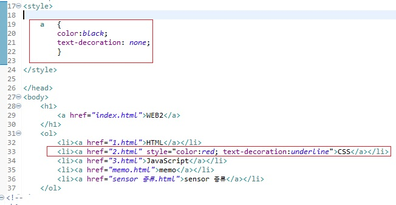

<> tag! 단락을 표현할 때는 줄바꿈 태그 보다는 단락을 표현하는 태그인 p 태그가 더 좋다. 웹페이지를
정보로서 가치있게 해준다. br태그는 줄바꿈을 의미할 뿐 br 태그는 줄바꿈을 많이하고 싶으면 여러번
쓰면된다. p(paragraph) 태그는 단락과 단락의 간격이 고정되어 있게 떄문에 시각적 자유도가 떨어지는
단점이 있다.
단점 극복 방법으로는 css style=""로 margin 간격으로 조절가능
margin : 여백, 여유, 차이
src, width 같은 것들은 attribute 속성 이라고한다.
li = list
ol ordered list 숫자 알파벳 목록
ul unordered list 순서가 필요없는 목록
dl definition list 사전처럼 용어 설명하는 목록
alt + shift + a : 세로블럭지정(이클립스)
title : 제목, meta charset="UTF-8" : 문자 설정 (charset : character
set)
body : 본문을 표시 , head : 본문을 설명할떄 , HTML : body 와 head를 감싸는 태그
관용적으로 이 웹페이가 HTML로서 만들어 졌다는 표현을 위해 문서 시작에 !doctype html을 쓴다
a : link ★★★★★ 중요함
a : href="URL" h(hyper text) ref(reference)
target="" 링크를 클릭 할 때 창을 어떻게 열 것인가
title="" : 해당 링크에 마우스를 갖다대면 link에 대한 설명이 나온다.
ex) iframe width="560" height="315" src="https://www.youtube.com/embed/7T7r_oSp0SE"
frameborder="0" allow="accelerometer; autoplay; encrypted-media; gyroscope; picture-in-picture"
allowfullscreen>
iframe : 동영상 삽입 기능 (옵션 width : 넓이 heigh 높이 src: 소스주소 frameborder : 경계? 표시줄? allow
a , h1 태그는 font태그와는 다르다
a 태그는 이게 링크라는 정보이고 h1은 이게 제목이다라는 정보이다
반대로 font태그는 Web에 대한 어떠한 정보를 가지고 있지 않다. 빨간색으로 표현으로 한다는 디자인이지만 디자인이 보는 시각에 따라 정보가 아닐수도 있다. 예를 들어 시각장애인이 봤을 때 의미없을 수도 있기 때문에
정보로써의 가치가 떨어진다.
예를 들어 아침점심저녁으로 웹링크 색깔을 수시로 바꿔달라고 하는 필요한 경우때문에 CSS가 필요해진 것이다
CSS 등장
처음에 브라우저 등장에는 HTML만 등장하였다.
CSS 언어는 HTML과 완전 다른 언어이다.
HTML문법으로 CSS 문법으로 이해해라 명렁어 입력 필요
웹 브라우저 안에 Style안에 있는 언어는 CSS라고 이해하라고 말하는 것과 같다.
CSS에서 a = link 전부 고르는 것 // color:red;
CSS는 새로 배워야 해서 학습자 입장에선 부담?
브라우저 입장에서는 폰트 태그는 태그만 추가하면 된다
새로운 언어를 해석하는 기능 탑재하기 때문에 어려운 일이다
CSS를 그럼에도 사용하는 이유는 폭팔적인 이유,효과가 있다.
코딩을 잘하는 법은 중복의 제거// 웹페이지의 중복된 코드 차이가 1억씩 차이가 날 수 있다.
CSS 사용의 이유는
유지보수를 더 편리하게 할 수 있고, 가독성 또한 높아진다. 웹페이지를 디자인하는 것이 훨씬 더 효과적으로 될 수 있다.
html은 중요하기 때문에 정보의 기능을 전념하기 위해 나온 것이 CSS
CSS을 통해서 디자인하는 것이 HTML로 통해 디자인하는 것 보다 훨씬 효율적이다.
CSS 기본문법
CSS는 Style 태그 외에 속성이란 방법이 존재 총 2가지
style태그를 쓴다
style속성을 쓴다.

style이라는 속성을 쓰면 웹브라우저는 CSS문법에 따라 해석해서 그 결과를 스타일 속성이 위치한 태그에 적용할 것이다
style="" 따옴표 안에는 HTML속성이며 약속으로 반드시 그 값으로 CSS 효과가 들어온다.
상위의 style 태그는 누구에게 지정할지 알수없다.
누구에게 줄 것인가 선택할수 있기에 a 부분을 selecter라고 부른다
color부분(효과부분)은 선언(declaration)이라고 한다.
declaration 은 우리가 스타일 태그를 직접 사용한 경우에는
스타일 태그가 위치한 태그에게 직접 효과를 줄 것이기 때문에
선택자를 사용할 필요없다.
style="color"부분도 declaration이다.
semicolon은 한줄에 description및 효과를 구분하기 위해서 적는 것이다.
혁명적인 변화
CSS 속성을 스스로 알아내는 방법
web 가운데 정렬 글씨 크기 하는 법
css text size up property 검색
css text align center property 검색
결과
검색할 필요 없이 자동완성을 써도 괜찮다.
개요
태그에서 설정한 id나 class 속성에 따라 스타일을 지정합니다.
참고: HTML 태그의 속성
id 에 줄 경우 아래처럼 #을 맨 앞에 붙여 사용하며, 원칙적으로 하나의 객체에만 적용할 수 있습니다.
#아이디{ 속성1:속성값; 속성2:속성값; }
class에 줄 경우 아래처럼 .을 맨 앞에 붙여 사용하며, 여러 객체에 적용할 수 있습니다.
.클래스명{ 속성1:속성값; 속성2:속성값 }
CSS 선택자를 스스로 알아내는 방법
.을 빼고 선택자(selecter)이름만 쓰게 되면 웹페이지에 있는 이름을 선택하게 되는 선택자이다.
.을 붙이면 Class가 .(이름)인 태그를 가르키는 선택자가 된다.
Class는 같은 의도에 따라 grouping 따라 묶는 것을 말한다.
해당 태그에 여러 class를 넣을 수 있다.
같은 Class끼리 우선 순위를 쓰게되면 제일 나중에 class 정의한 것이 활성화 된다.
이것을 해결하기 위해 ID를 넣는다
ID선택자의 경우 Class보다 우선순이가 높다.
선택자 우선 순위는 ID>Class>a 순서이고 같은 우선순위끼리는 나중에 정의한 것이 활성화된다.
우선순위의 이유는 ID 선택자는 한번만 동작하고 Class 선택자 중복되어서 동작 가능하고 a 선택자는 모든 부든에서 활성화하기 때문이다.
좀더 포괄적인 것보다 구체적인 것이 우선순위를 높게 순위를 두었다. 선택자 종류 중요
CSS box model 소개
h1 태그 같은 코드줄에 있는데 줄바꿈이 되고 제목 태그는 화면 전체를 쓰는 것이 기본적으로 편리하기 때문이고
a 태그는 같은 코드줄에 있는데 줄바꿈이 되지않는다. 링크태그는 화면 전체를 쓴다면 링크 앞뒤로 있는 줄바꿈이 된다면 불편하기 때문에 자기 컨텐츠만 쓰기 때문에 줄바꿈이 필요없다.
h1과 a 태그에 테두리를 그리면 부피감을 알수가있다.
style에서
h1, a - selecter
property- border, display, padding, margin, width
block level element : 화면 전체를 쓰는 태그 (ex. h1
inline element : 자기 자신의 컨텐츠를 갖는 태그 (ex. a
property 값으로 display : line, block, none 등으로 설정을 바꿀 수있다.
--> 현재 reload 했을 때 내부적으로 어떤 파일들을 웹서버에서 다운로드하는지를 보여주는 기능
하나의 웹페이지에서 여러 개의 파일들을 별도로 바깥에 두고 그것을 다운로드하는 것
그냥 웹 페이지 안에 css 코드를 내장하는 것
중에서 network 측면에서 더 효율적일까?
웹 페이지 안에 CSS안에 넣는 게 더 효율적이지만
Caching을 사용하면 달라진다.
한 번이라도 style.css 파일을 다운로드하였다면, 저 파일이 바뀌기 전까지 style.css 파일을 웹 브라우저는 우리 로컬 PC에 저장했다가 style.css 파일을 요청하면 저장된 결과를 가져와서 속도를 높일 수 있고, 네트워크를 안 쓰기 때문에 사업자들은 돈을 아낀다.
훨씬 더 빠르게 웹페이지를 보여주고 트래픽 사용료를 더 적게 낼 수 있다.
JavaScript
WEB2 - JavaScript
HTML은 정적이다.
JavaScript는 동적, 사용자와 상호작용한다. 반응형 / 상호 작용을 위해 태어난 것
HTML을 base로 JavaScript의 기능을 더해 하나의 시스템으로 나아감.
HTML는 정보라는 멈춰있는 '이미지'라면 JS는 동영상 혹은 애니메이션과 같다.
수업의 목적
JS 사용자와 상호작용하는 언어이다.
Web browser는 한 번 화면에 출력되면 자기 자신은 못 바꾸지만, JS를 이용하면 얼마든지 즉시 변경 가능하다. 예를 들어 body tag에 코드(CSS의 Sytle)를 추가 변경/적용하여 속성을 바꿀 수 있다.
onclick 이란 속성값으로는 반드시 JS가 와야한다. onclick 속성값은 Web bowser가 기억하고 있다가 onclick 속성이 위치하고 있는 태그를 사용자가 클릭 했을 때 기억하고 있었던 JS 코드를 JS의 문법에 따라서 해석해서 거기 적혀 있는대로 Web bowser가 동작할 것이다.
이번 주제의 주인공은 on으로 시작하는 속성들이다. 이런 속성(attribute)들을 이벤트라고 한다. 이러한 이벤트들을 사용자들에게 유용할 만한 것들을 10~20개 정도 정리해 놓았고, 이런 것들을 이용해 사용자와 상호작용하는 코드를 만들 수 있다.
JS Attribute 검색 예제 :javascript select tag by css selector, javascript element style
day, night 버튼으로 Style 변경
프로그램, 프로그래밍, 프로그래머
JavaScript는 무엇인가? 무엇을 할 수 있는가?
프로그래밍 언어가 무엇인지 되돌아 보기
HTML 과 JS는 둘다 컴퓨터 언어(language)이다.
JS는 programming language이다.
HTML은 programming language이 아니다.
이유는?
HTML은 Web page 묘사하는 목적에 언어이기 때문에 시간에 순서에 따라서 무엇을 할 필요가 없다.
JS는 사용자와 상호작용을 하기 위한 언어이다. 그러기 위해서는 시간의 순서에 따라서 Web browser의 여러 기능이 실행 되어야 한다.
Programming이라는 특징을 가진다.
이 차이가 HTML과 JavaScript의 가장 큰 차이이다.
program 어원 : 시간의 흐름에 따라 연주되는 순서를 program
순서를 만드는 행위를 programming
순서를 만드는 사람을 program
시간의 순서에 따라서 실행되어야할 기능을 프로그래밍 언어 문법에 맞게 글로 적어두는 방식을 고안
-> Software에서의 Programming
마지막으로 완성하면 사이트 정리해서
https://ofcourse.kr/ 사이트같이 만들어 볼 것